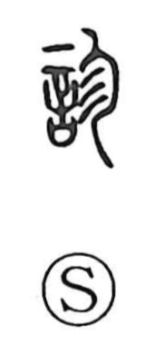

診

Uncategorized
Kun: miru | On: shin
to examine ・ diagnose
Explanation
A picto-phonetic character. The phonetic element that gives the on reading shin depicts a human body marked with the patterned strokes of san, suggesting the blotches of a rash or exanthema appearing on the skin. Because such eruptions warn of illness within, the character came to mean tending to and closely looking at the affected part—hence to examine a patient, to look, and to investigate. In Zhuangzi we even find 診其夢, “to examine his dream,” showing an extended sense of interpreting dreams.